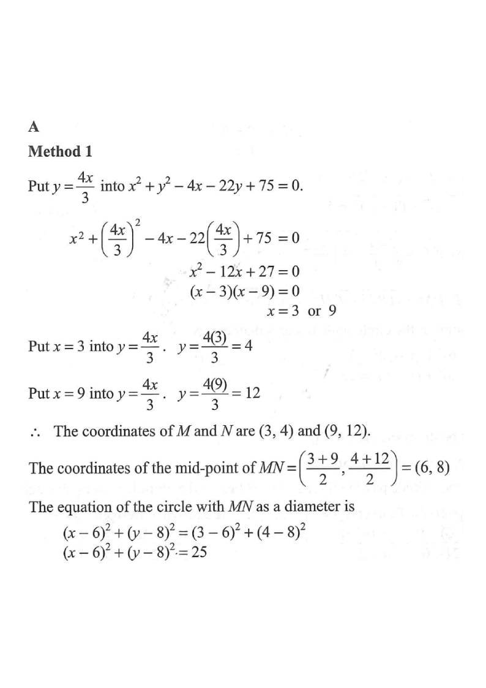

Circle C: $x^2+y^2-4x-22y+75=0$Line L: $4x=3y$Intersections $M,\;N$Centre $P(6,8)$ & required circle
[2021 MC #40] If the straight line $4x=3y$ and the circle
$$x^{2}+y^{2}-4x-22y+75=0$$ intersect at the points $M$ and $N$, then the equation of the circle with $MN$ as a diameter is
A. $(x-6)^{2}+(y-8)^{2}=25$
B. $(x-8)^{2}+(y-6)^{2}=25$
C. $(x-6)^{2}+(y-8)^{2}=100$
D. $(x-8)^{2}+(y-6)^{2}=100$

Figure (original exam diagram)
Step-by-step Solution
Step 1 · Rewrite the line
The line $4x=3y$ can be written as
$$y=\frac{4x}{3}$$
This is the substitution we use in the circle equation.
💡 Hints: Whenever a line is given as $4x=3y$, isolate $y$ (or $x$) and substitute into the circle.
Step 2 · Substitute into the circle
Put $y=\dfrac{4x}{3}$ into $x^{2}+y^{2}-4x-22y+75=0$:
Hence the coordinates of $M$ and $N$ are $(3,4)$ and $(9,12)$.
💡 Sanity check: both points satisfy $4x=3y$ (e.g. $4\cdot3=12=3\cdot4$). ✓
Solving a Quadratic Equation by Factorisation\(x^{2}-12x+27=0\iff(x-3)(x-9)=0\)The two roots \(x=3\) and \(x=9\) give the intersection points \((3,4)\) and \((9,12)\).
Step 4 · Mid-point of $MN$ (centre)
The circle with $MN$ as a diameter has its centre at the mid-point of $MN$:
Mid-point Formula\(\left(\dfrac{x_{1}+x_{2}}{2},\ \dfrac{y_{1}+y_{2}}{2}\right)\)The centre is the mid-point of \(MN\): \(\left(\dfrac{3+9}{2},\dfrac{4+12}{2}\right)=(6,8)\).
Step 5 · Radius and final equation
The radius $r$ is half of $MN$, equivalently the distance from centre to $M$:
$$r^{2}=(3-6)^{2}+(4-8)^{2}=9+16=25$$
Therefore the equation of the required circle is
$$(x-6)^{2}+(y-8)^{2}=25$$
⚠️ Do not confuse the centre $(6,8)$ with $(8,6)$ — the mid-point formula gives $x$-coordinate $\frac{3+9}{2}=6$ and $y$-coordinate $\frac{4+12}{2}=8$.
Equation of a Circle\((x-h)^{2}+(y-k)^{2}=r^{2}\)With centre \((6,8)\) and \(r^{2}=(3-6)^{2}+(4-8)^{2}=25\), the circle is \((x-6)^{2}+(y-8)^{2}=25\).
Final Answer
A. $(x-6)^{2}+(y-8)^{2}=25$
PRACTICESimilar question — try it yourself
Question. If the straight line \(2x=y\) and the circle \(x^{2}+y^{2}-16x-12y+60=0\) intersect at the points \(M\) and \(N\), find the equation of the circle with \(MN\) as a diameter.
Show the worked solution
Step 1. Put \(y=2x\) into the circle: \(x^{2}+4x^{2}-16x-24x+60=0\), i.e. \(5x^{2}-40x+60=0\).
Step 2. Divide by \(5\): \(x^{2}-8x+12=0\), so \((x-2)(x-6)=0\) and \(x=2\) or \(x=6\).
Step 3. Then \(y=2x\) gives \(M(2,4)\) and \(N(6,12)\).
Step 4. Centre is the mid-point of \(MN\): \(\left(\dfrac{2+6}{2},\dfrac{4+12}{2}\right)=(4,8)\).
Step 5. Radius squared \(=(2-4)^{2}+(4-8)^{2}=4+16=20\), so the circle is \((x-4)^{2}+(y-8)^{2}=20\).